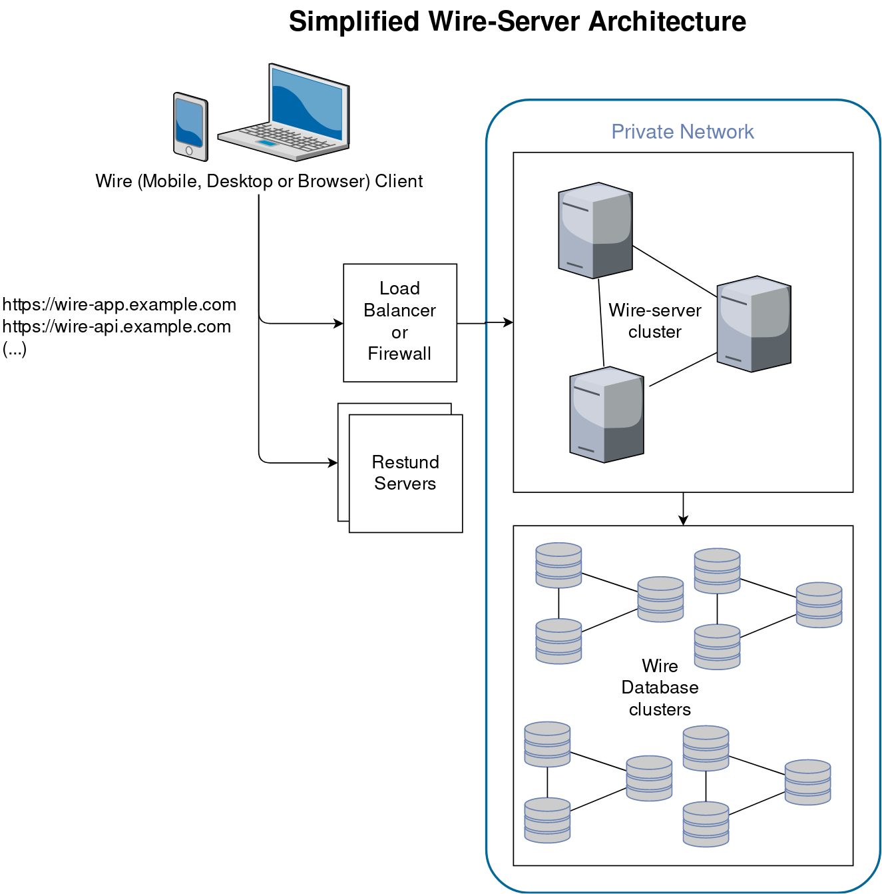
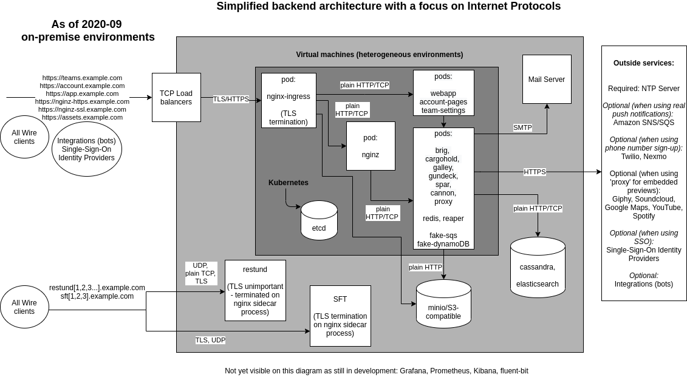

Architecture Overview
Introduction
In a simplified way, the server components for Wire involve the following:
The Wire clients (such as the Wire app on your phone) connect either directly (or via a load balancer) to the “Wire Server”. By “Wire Server” we mean multiple API server components that connect to each other, and which also connect to a few databases. Both the API components and the databases are each in a “cluster”, which means copies of the same program code runs multiple times. This allows any one component to fail without users noticing that there is a problem (also called “high-availability”).
Architecture and networking
Note that the webapp, account pages, and team-settings, while in a way not part of the backend, are installed with the rest and therefore included.
Focus on internet protocols
Focus on high-availability
The following diagram shows a usual setup with multiple VMs (Virtual Machines):

Wire clients (such as the Wire app on your phone) connect to a load balancer.
The load balancer forwards traffic to the ingress inside the kubernetes VMs. (Restund is special, see Restund (TURN) servers for details on how Restund works.)
The nginx ingress pods inside kubernetes look at incoming traffic, and forward that traffic on to the right place, depending on what’s inside the URL passed. For example, if a request comes in for https://example-https.example.com, it is forwarded to a component called nginz, which is the main entry point for the wire-server API. If, however, a request comes in for https://webapp.example.com, it is forwarded to a component called webapp, which hosts the graphical browser Wire client (as found when you open https://app.wire.com).
Wire-server needs a range of databases. Their names are: cassandra, elasticsearch, minio, redis, etcd.
All the server components on one physical machine can connect to all the databases (also those on a different physical machine). The databases each connect to each-other, e.g. cassandra on machine 1 will connect to the cassandra VMs on machines 2 and 3.
Backend components startup
The Wire server backend is designed to run on a kubernetes cluster. From a high level perspective the startup sequence from machine power-on to the Wire server being ready to receive requests is as follow:
Kubernetes node power on. Systemd starts the kubelet service which makes the worker node available to kubernetes. For more details about kubernetes startup refer to the official kubernetes documentation. For details about the installation and configuration of kubernetes and worker nodes for Wire server see Installing kubernetes and databases on VMs with ansible
Kubernetes workload startup. Kubernetes will ensure that Wire server workloads installed via helm are scheduled on available worker nodes. For more details about workload scheduling refer to the official kubernetes documentation. For details about how to install Wire server with helm refer to Installing wire-server (production) components using Helm.
Stateful workload startup. Systemd starts the stateful services (cassandra, elasticsearch and minio). See for instance ansible-cassandra role and other database installation instructions in Installing kubernetes and databases on VMs with ansible
Other services. Systemd starts the restund docker container. See ansible-restund role. For details about docker container startup consult the official documentation
Note
For more information about Virual Machine startup or operating system level service startup, please consult your virtualisation and operating system documentation.
Focus on pods
The Wire backend runs in a kubernetes cluster, with different components running in different pods.
This is a list of those pods as found in a typical installation.
HTTPS Entry points:
nginx-ingress-controller-controller: Ingress exposes HTTP and HTTPS routes from outside the cluster to services within the cluster.nginx-ingress-controller-default-backend: The default backend is a service which handles all URL paths and hosts the nginx controller doesn’t understand (i.e., all the requests that are not mapped with an Ingress), that is 404 pages. Part ofnginx-ingress.
Frontend pods:
webapp: The fully functioning Web client (like https://app.wire.com). This pod serves the web interface itself, which then interfaces with other services/pods, such as the APIs.account-pages: This pod serves Web pages for user account management (a few pages relating to e.g. password reset).team-settings: Team management Web interface (like https://teams.wire.com).
Pods with an HTTP API:
brig: The user management API service. Connects tocassandraandelastisearchfor user data storage, sends emails and SMS for account validation.cannon: WebSockets API Service. Holds WebSocket connections.cargohold: Asset Storage API Service. Amazon-AWS-S3-style services are used bycargoholdto store encrypted files that users are sharing amongst each other, such as images, files, and other static content, which we call assets. All assets except profile pictures are symmetrically encrypted before storage (and the keys are only known to the participants of the conversation in which an assets was shared - servers have no knowledge of the keys).galley: Conversations and Teams API Service. Data is stored in cassandra. Usesgundeckto send notifications to users.nginz: Public API Reverse Proxy (Nginx with custom libzauth module). A modified copy of nginx, compiled with a specific set of upstream extra modules, and one important additional module zauth_nginx_module. Responsible for user authentication validation. Forwards traffic to all other API services (except federator)spar: Single Sign On (SSO) and SCIM. Stores data in cassandra.gundeck: Push Notification Hub (WebSocket/mobile push notifications). Uses redis as a temporary data store for websocket presences. Uses Amazon SNS and SQS.federator: Connects different wire installations together. Wire Federation, once implemented, aims to allow multiple Wire-server backends to federate with each other. That means that a user 1 registered on backend A and a user 2 registered on backend B should be able to interact with each other as if they belonged to the same backend.
Supporting pods and data storage:
cassandra-ephemeral(orcassandra-external): NoSQL Database management system (https://en.wikipedia.org/wiki/Apache_Cassandra). Everything stateful in wire-server (cassandra is used bybrig,galley,gundeckandspar) is stored in cassandra. *cassandra-ephemeralis for test clusters where persisting the data (i.e. loose users, conversations,…) does not matter, but this shouldn’t be used in production environments. *cassandra-externalis used to point to an external cassandra cluster which is installed outside of Kubernetes.demo-smtp: In “demo” installations, used to replace a proper external SMTP server for the sending of emails (for example verification codes). In production environments, an actual SMTP server is used directly instead of this pod. (https://github.com/namshi/docker-smtp)fluent-bit: A log processor and forwarder, allowing collection of data such as metrics and logs from different sources. Not typically deployed. (https://fluentbit.io/)elastisearch-ephemeral(orelastisearch-external): Distributed search and analytics engines, stores some user information (name, handle, userid, teamid). Information is duplicated here from cassandra to allow searching for users. Information here can be re-populated from data in cassandra (albeit with some downtime for search functionality) (https://www.elastic.co/what-is/elasticsearch). *elastisearch-ephemeralis for test clusters where persisting the data doesn’t matter. *elastisearch-externalrefers to elasticsearch IPs located outside kubernetes by specifying IPs manually.fake-aws-s3: Amazon-AWS-S3-compatible object storage using MinIO (https://min.io/), used by cargohold to store (encrypted) assets such as files, posted images, profile pics, etc.fake-aws-s3-reaper: Creates the default S3 bucket inside fake-aws-s3.fake-aws-sns. Amazon Simple Notification Service (Amazon SNS), used to push messages to mobile devices or distributed services. SNS can publish a message once, and deliver it one or more times.fake-aws-sqs: Amazon Simple Queue Service (Amazon SQS) queue, used to transmit any volume of data without requiring other services to be always available.redis-ephemeral: Stores websocket connection assignments (part of thegundeck/cannonarchitecture).
Short running jobs that run during installation/upgrade (these should usually be in the status ‘Completed’ except immediately after installation/upgrade):
cassandra-migrations: Used to initialize or upgrade the database schema in cassandra (for example when the software is upgraded to a new version).galley-migrate-data: Used to upgrade data incassandrawhen the data model changes (for example when the software is upgraded to a new version).brig-index-migrate-data: Used to upgrade data incassandrawhen the data model changes in brig (for example when the software is upgraded to a new version)elastisearch-index-create: Creates an Elastisearch index for brig.spar-migrate-data: Used to update spar data in cassandra when schema changes occur.
As an example, this is the result of running the kubectl get pods --namespace wire command to obtain a list of all pods in a typical cluster:
NAMESPACE NAME READY STATUS RESTARTS AGE
wire account-pages-54bfcb997f-hwxlf 1/1 Running 0 85d
wire brig-58bc7f844d-rp2mx 1/1 Running 0 3h54m
wire brig-index-migrate-data-s7lmf 0/1 Completed 0 3h33m
wire cannon-0 1/1 Running 0 3h53m
wire cargohold-779bff9fc6-7d9hm 1/1 Running 0 3h54m
wire cassandra-ephemeral-0 1/1 Running 0 176d
wire cassandra-migrations-66n8d 0/1 Completed 0 3h34m
wire demo-smtp-784ddf6989-7zvsk 1/1 Running 0 176d
wire elasticsearch-ephemeral-86f4b8ff6f-fkjlk 1/1 Running 0 176d
wire elasticsearch-index-create-l5zbr 0/1 Completed 0 3h34m
wire fake-aws-s3-77d9447b8f-9n4fj 1/1 Running 0 176d
wire fake-aws-s3-reaper-78d9f58dd4-kf582 1/1 Running 0 176d
wire fake-aws-sns-6c7c4b7479-nzfj2 2/2 Running 0 176d
wire fake-aws-sqs-59fbfbcbd4-ptcz6 2/2 Running 0 176d
wire federator-6d7b66f4d5-xgkst 1/1 Running 0 3h54m
wire galley-5b47f7ff96-m9zrs 1/1 Running 0 3h54m
wire galley-migrate-data-97gn8 0/1 Completed 0 3h33m
wire gundeck-76c4599845-4f4pd 1/1 Running 0 3h54m
wire nginx-ingress-controller-controller-2nbkq 1/1 Running 0 9d
wire nginx-ingress-controller-controller-8ggw2 1/1 Running 0 9d
wire nginx-ingress-controller-default-backend-dd5c45cf-jlmbl 1/1 Running 0 176d
wire nginz-77d7586bd9-vwlrh 2/2 Running 0 3h54m
wire redis-ephemeral-master-0 1/1 Running 0 176d
wire spar-8576b6845c-npb92 1/1 Running 0 3h54m
wire spar-migrate-data-lz5ls 0/1 Completed 0 3h33m
wire team-settings-86747b988b-5rt45 1/1 Running 0 50d
wire webapp-54458f756c-r7l6x 1/1 Running 0 3h54m
1/1 Running 0 3h54m
Note
This list is not exhaustive, and your installation may have additional pods running depending on your configuration.